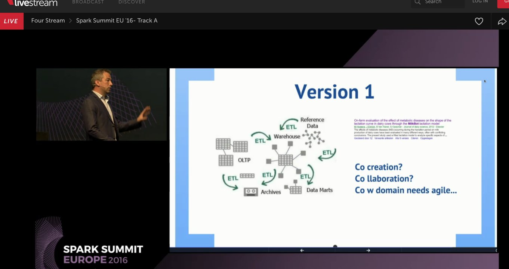

I'm Miel Hostens, post-doc assistant and
researcher at Ghent University – ROHH.
-
I grew up in the 80s!
-
I finished my PhD in Veterinary Medicine on the interaction between reproduction and nutrition in dairy cows.
-
I got really excited combining a pasion for IT with the domain of dairy cows.
-
I currently work on a FP7 EU project called GplusE.
What i really do

These slides do not only include scientific results,
they also include my personal opinion and experience.
-
Opinions are marked with the
 symbol.
symbol.
- The Web was invented in 1990.
- I was 8 years old at that moment.
- Being a data scientiest is almost as fun as being a veterinarian.
The more you participate,
the more I can share
-
Think along, speak up,
don't hesitate to prove me wrong.
- I'm especially happy to discuss experience.
-
Let's start
with an overview of the availaible slides.
 Except where otherwise noted, the content of these slides is licensed under a Creative Commons Attribution 4.0 International License.
Except where otherwise noted, the content of these slides is licensed under a Creative Commons Attribution 4.0 International License.